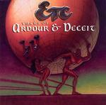

| Artist: | Etcetera |
| Title: | Tales Of Ardour And Deceit |
| Label: | Record Heaven RHCD39 |
| Length(s): | minutes |
| Year(s) of release: | 2003 |
| Month of review: | [01/2004] |
| 1) | The Song Of Marsh Stig | 16.27 |
| 2) | Songs | 4.11 |
| 3) | Kentish Suite | 8.17 |
| 4) | The Lady Of Castela | 7.40 |
| 5) | Lament | 3.58 |
| 6) | The Ghost Of Yang Part I | 11.38 |
| 7) | The Exit | 3.42 |
| 8) | The Ghost Of Yang Part II | 3.39 |
We then continue with a few shorter tracks, the first one of which is Songs. Here the band takes the route of Gentle Giant. I am not sure who is actually singing here, but the harmony vocals do not come out well. My impression is that the band overreaches itself here. Too bad. The melodies are nice, a bit on the medieval folk side (and in that sense also quite close to GG). In Kentish Suite we move into Spock's Beard territory (as they happen to have taken it over from Gentle Giant|). Up-tempo and frolic, this is quite meandering stuff, especially on the guitar work. It lacks in a flow that I do happen to find with most Beard material. In that sense, this song is a bit of a disappointment. It never really gets underway. Towards the end the song gets out of its lethargy and starts to rock somewhat. But the meandering aspect stays. There are some Scottish influences here, some stuff that could well have been played by bagpipes.
The Lady Of Castela sounds very naked productionally, a bit in the vein of ELP's The Sage. Acoustic guitar is the dominant factor here you can hear the fingers slide over the strings. Later some friendly fluting keyboards set in as well, yielding something of a Genesis type atmosphere. Later, the acoustic guitars start to become more involved, and the drums set in. This quite a bit more complex, and it certainly has its charms. Then the music becomes a bit ehm jolly, I guess with the electric guitar setting in. The later acoustic stuff had elements of Yes, but now.... A step up from the previous two songs.
Lament is a rather short track opening with woolly keyboards and sharp ethereal guitar playing. The keyboards have something of Watcher Of The Skies, but the guitar is a bit too psychedelic for that. The middle part is quite moody and electronics dominated.
The second epic The Ghost Of Yang, which is split into two parts, of which the first is by far the longest. Like the third track, this is a rather fragmentary tune which does not really get me excited, also because the melodic material is not something to write home about.
The Exit is a shortish instrumental, waltzy in character, but melodically not very inspiring. It tends to go a bit and stop. The Ghost Of Yang Part II features only the sound of the wind, telling us goodbye.